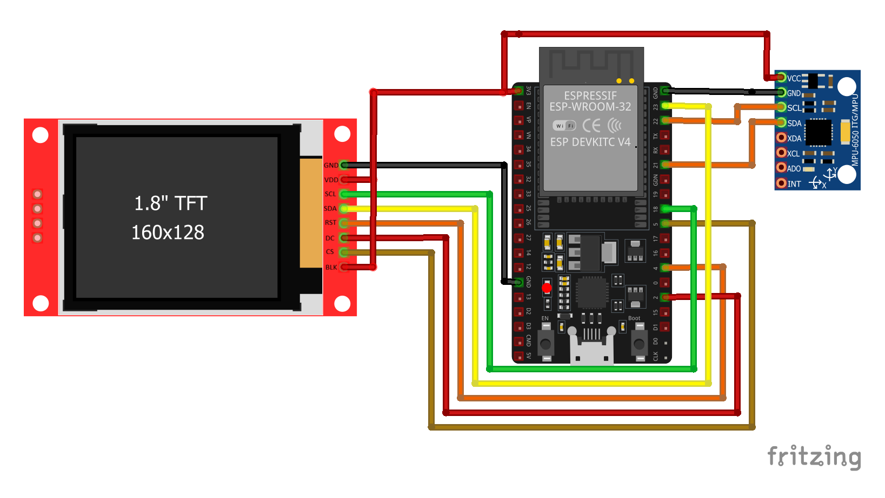

Code for ESP32
#include
#include
#include
#include
#include
#include
// ================= TFT =================
#define TFT_CS 5
#define TFT_DC 2
#define TFT_RST 4
Adafruit_ST7735 tft(TFT_CS, TFT_DC, TFT_RST);
// ================= MPU =================
MPU6050 mpu;
int16_t axR, ayR, azR; // raw accelerometer data
float pitchRaw, rollRaw;
float pitch = 0, roll = 0;
// filter strength (smaller = smoother)
const float alpha = 0.08;
// screen parameters
int W, H, CX, CY;
// ================= SETUP =================
void setup() {
Wire.begin(21, 22);
mpu.initialize();
tft.initR(INITR_BLACKTAB);
tft.setRotation(1);
W = tft.width();
H = tft.height();
CX = W / 2;
CY = H / 2;
tft.fillScreen(ST77XX_BLACK);
}
// ================= READ MPU + FILTER =================
void readMPU() {
mpu.getAcceleration(&axR, &ayR, &azR);
float ax = axR / 16384.0;
float ay = ayR / 16384.0;
float az = azR / 16384.0;
pitchRaw = atan2(ax, sqrt(ay * ay + az * az)) * 180 / PI;
rollRaw = atan2(ay, az) * 180 / PI;
// Low-pass filter (removes vibration)
pitch += (pitchRaw - pitch) * alpha;
roll -= (rollRaw + roll) * alpha;
}
// ================= ROTATED LINE =================
void drawRotLine(int x1, int y1, int x2, int y2, float a) {
float s = sin(a);
float c = cos(a);
x1 -= CX; y1 -= CY;
x2 -= CX; y2 -= CY;
int rx1 = x1 * c - y1 * s + CX;
int ry1 = x1 * s + y1 * c + CY;
int rx2 = x2 * c - y2 * s + CX;
int ry2 = x2 * s + y2 * c + CY;
tft.drawLine(rx1, ry1, rx2, ry2, ST77XX_WHITE);
}
// ================= DRAW HORIZON =================
void drawHorizon() {
tft.fillScreen(ST77XX_BLACK);
// pitch -> rotation
// roll -> vertical shift
float ang = radians(-pitch);
static float shiftF = 0;
shiftF += ((roll * 2.0) - shiftF) * 0.2;
int shift = shiftF;
// ===== MOVING HORIZON LINES =====
for (int d = -40; d <= 40; d += 10) {
int y = CY + d * 3 + shift;
int len = (d % 20 == 0) ? 50 : 30;
drawRotLine(
CX - len / 2,
y,
CX + len / 2,
y,
ang
);
}
// ===== CENTER LINE =====
tft.drawFastHLine(CX - 30, CY, 60, ST77XX_YELLOW);
// ===== AIRCRAFT SYMBOL =====
tft.drawFastHLine(CX - 18, CY, 36, ST77XX_YELLOW);
tft.drawFastVLine(CX, CY, 12, ST77XX_YELLOW);
}
// ================= LOOP =================
void loop() {
readMPU();
drawHorizon();
delay(30); // ~40 FPS smooth animation
}